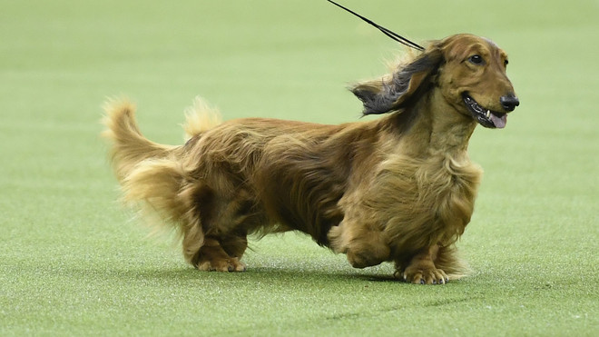

About the Dashshund

The word “icon” is terribly overworked, but the Dachshund—with his unmistakable long-backed body, little legs, and big personality—is truly an icon of purebred dogdom. Dachshunds can be standard-sized (usually 16 to 32 pounds) or miniature (11 pounds or under), and come in one of three coat types: smooth, wirehaired, or longhaired.
Dachshunds aren’t built for distance running, leaping, or strenuous swimming, but otherwise these tireless hounds are game for anything. Smart and vigilant, with a big-dog bark, they make fine watchdogs. Bred to be an independent hunter of dangerous prey, they can be brave to the point of rashness, and a bit stubborn, but their endearing nature and unique look has won millions of hearts the world over.
Temperament:
Loyal, Mischievous, Outgoing
Height: 8-9 inches (standard), 5-6 inches
Weight: 16-32 pounds (standard), 11 pounds & under (miniature)
Life Expectancy:12-16 years
CARE
Nutration
It is extremely important that a Dachshund not be allowed to become overweight. This is not only because of general health reasons, but also to avoid strain to the Dachshund’s long back, which can lead to slipped or ruptured (herniated) discs. Ignore the pleading eyes, and give only the recommended amount given by the manufacturer of the quality dog food of your choice. Give table scraps very sparingly, if at all, especially avoiding cooked bones and foods with high fat content. Remember that the Dachshund’s nose can get him into trouble, and always keep food well out of his reach.
Grooming
Dachshunds are moderate shedders, relatively clean, and have little or no body odor. The breed’s grooming needs vary with the three coat types. Smooth-coated Dachshunds are somewhat “wash and wear,” needing little beyond a wipe with a towel or hound glove to look dapper. Longhaired Dachshunds may require more frequent brushing, depending on the thickness of the coat. The Wirehaired coat can be plucked or hand-stripped several times a year to look its best, but beyond that is easy to maintain between groomings with occasional trimming of the beard and eyebrows and brushing or combing once or twice a week. All Dachshunds should have their nails trimmed every month.
Exercise
Many owners think that because they are so small, Dachshunds don’t require more exercise than just running around the house. However, they do need regular exercise not only to stay fit, but also to build strong muscles to support and protect their back. Two walks every day of moderate length should be sufficient. To avoid injury, never allow your Dachshund to run up and down stairs or jump on or off furniture. Because they are very social, Dachshunds don’t do well as outdoor dogs—they want to be with their humans.
Training
Dachshunds are very intelligent but are also independent and often stubborn, so they can be a challenge to train. They love to give and receive affection and do best with positive, reward-based training. They are sensitive and will not react well to harsh commands or punishment. Patience and consistence are key. Dachshunds have an excellent sense of smell as well as a strong prey drive. Because they were bred to stay focused and follow a trail without distraction, if they are busy with something more interesting they may not always pay attention to you.
Health
Generally a healthy breed, the Dachshund can be expected to live 12 to 16 years with proper care, so long as he’s kept on a good diet and has enough exercise to maintain good muscle tone. To prevent disc damage to the Dachshund’s long back, be vigilant about keeping him from becoming overweight, and always monitor his activities to avoid back injury. Like most dogs with drop ears, Dachshunds can get ear infections if their ears aren’t kept clean.
History
“Dachshund” is a German word meaning “badger dog,” and the breed’s German history goes back some 600 years. And, as the breed name suggests, the Dachshund was developed to enthusiastically dig his way into a badger den and dispatch its occupant. The Dachshund’s long, low body was custom-made for this dirty subterranean work.
For a dog of any size, a badger is a formidable adversary, weighing anywhere from 25 to 40 pounds, with razor-sharp teeth and claws. The cleverness, courage, perseverance, and strength that are hallmarks of today’s Dachshund were first bred into his long-ago ancestors to best equip them for battling a deadly foe. The little dog’s surprisingly loud, houndy bark is also a throwback to his working roots: It allowed the Dachshund’s above-ground human hunting partner to mark his hound’s underground location.
In addition to the breed’s short, smooth coat, selective breeding produced types with wire coats for work in thorny brier patches, and long coats for cold climates. Dachshunds of various sizes were bred to work on different kinds of quarry. Packs of Dachshunds, according to breed authorities, were often used on wild boar. By the late 1800s, the process of standardizing the breed according to size, coat, and color varieties was well underway.
The Dachshund has long been a national symbol of Germany, so closely associated with the fatherland that during World War I American fanciers took to calling them Liberty Hounds due to anti-German sentiment. Admitted to the AKC Stud Book in 1885, their popularity in America was immediate and enduring.
General Aperence
Low to ground, long in body and short of leg, with robust muscular development; the skin is elastic and pliable without excessive wrinkling. Appearing neither crippled, awkward, nor cramped in his capacity for movement, the Dachshund is well-balanced with bold and confident head carriage and intelligent, alert facial expression. His hunting spirit, good nose, loud tongue and distinctive build make him well-suited for below-ground work and for beating the bush. His keen nose gives him an advantage over most other breeds for trailing.
HEAD
Viewed from above or from the side, the head tapers uniformly to the tip of the nose. The eyes are of medium size, almond-shaped and dark-rimmed, with an energetic, pleasant expression; not piercing; very dark in color. The bridge bones over the eyes are strongly prominent. Wall eyes, except in the case of dappled dogs, are a serious fault. The ears are set near the top of the head, not too far forward, of moderate length, rounded, not narrow, pointed, or folded. Their carriage, when animated, is with the forward edge just touching the cheek so that the ears frame the face. The skull is slightly arched, neither too broad nor too narrow, and slopes gradually with little perceptible stop into the finely-formed, slightly arched muzzle, giving a Roman appearance. Lips are tightly stretched, well covering the lower jaw. Nostrils well open. Jaws opening wide and hinged well back of the eyes, with strongly developed bones and teeth. Teeth-Powerful canine teeth; teeth fit closely together in a scissors bite. An even bite is a minor fault. Any other deviation is a serious fault.
BODY
Neck: Long, muscular, clean-cut, without dewlap, slightly arched in the nape, flowing gracefully into the shoulders without creating the impression of a right angle.
Trunk: The trunk is long and fully muscled. When viewed in profile, the back lies in the straightest possible line between the withers and the short, very slightly arched loin. A body that hangs loosely between the shoulders is a serious fault. Abdomen-Slightly drawn up.
FOREQUARTERS
For effective underground work, the front must be strong, deep, long and cleanly muscled. Forequarters in detail: Chest – The breast-bone is strongly prominent in front so that on either side a depression or dimple appears. When viewed from the front, the thorax appears oval and extends downward to the mid-point of the forearm. The enclosing structure of the well-sprung ribs appears full and oval to allow, by its ample capacity, complete development of heart and lungs. The keel merges gradually into the line of the abdomen and extends well beyond the front legs.
COAT
Can be Smooth, Wirehaired or Longhair.
HINDQUARTERS
Strong and cleanly muscled. The pelvis, the thigh, the second thigh, and the rear pastern are ideally the same length and give the appearance of a series of right angles. From the rear, the thighs are strong and powerful. The legs turn neither in nor out. Rear pasterns – Short and strong, perpendicular to the second thigh bone. When viewed from behind, they are upright and parallel.